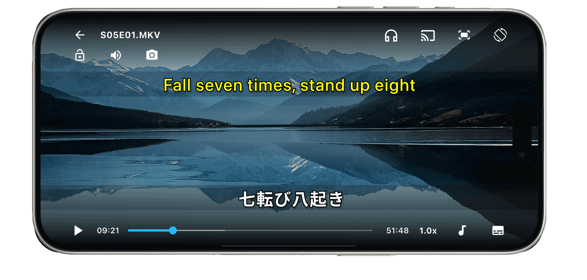

Comprehensible Input (Krashen)
Dual subtitles and instant line replay keep dialogue understandable while still challenging — stay in context and absorb patterns from real speech.
Full-featured video player · First-class subtitles · Language learning
SubX Player is a full-featured video player with first-class subtitles and language-learning tools. Play movies, anime, local files, and streams — use dual subtitles, translation, and sync when you need them, generate subtitles when tracks are missing or wrong, and practice with repetition, shadowing, and sentence mining when you want — all without switching apps.
Everyday playback · Dual subtitles and offline translation · Shadowing, repeat, and sentence mining

VLC, MX Player, and similar apps handle formats, local files, and everyday watching well. But subtitle workflows — dual languages, translation, line-by-line navigation, repetition — are usually an afterthought, not a first-class experience.
Browser extensions and specialized apps offer bilingual subtitles and vocabulary tools, but they often depend on specific platforms, lack full playback features, or aren't the player you'd use for your own files, folders, streams, PIP, and casting.
A serious media player with first-class subtitles and language-learning tools built on the same subtitle layer — so you can watch normally and learn whenever you want.
SubX is not a language course and not a generic player with learning features bolted on. It is a full-featured video player where subtitles and language learning are both first-class.
Watch normally. Learn whenever you want.
On-device transcription for supported languages and models — your video stays on your device.
SubX organizes capabilities around how you actually use video — watch your content, understand dialogue through subtitles, and practice from the same player when something catches your attention.
Play MKV, MP4, AVI, MOV, MP3, FLAC, and stream via M3U/M3U8. Your own library — not locked to one platform or curated catalog.
Browse local video libraries by folder and build playlists for series, courses, or listening sessions — the organization you expect from a serious player.
Keep listening with the screen off, use picture-in-picture while multitasking, or cast to a TV while keeping subtitle controls on your phone.
Put two languages on screen at once to follow foreign-language movies and shows without losing context — and connect meaning to unfamiliar words when you want to learn.
Translate subtitle tracks on-device into 60+ languages free. SubX+ expands to 130+ languages for a sharper bilingual viewing experience.
Fix timing and text, adjust sync when tracks drift, and export corrected subtitles in SRT, VTT, TXT, or PDF (export with SubX+).
When subtitles are missing or don't match the audio, create them on your device using OpenAI Whisper and Moonshine (supported languages and models). Free tier includes a standard model; SubX+ adds high-accuracy models for English, Korean, Japanese, Spanish, French, German, and Arabic.
Jump between subtitle lines instantly to replay a difficult passage — spend time on the dialogue, not hunting your position on the timeline (SubX+).
Playback pauses at each subtitle line so you can repeat out loud before moving on — practice speaking along with native audio when you choose (SubX+).
Loop a subtitle line with adjustable count and delay until sounds and words become familiar — ear training on your schedule (SubX+).
Capture useful lines from what you watch. On Android, export to Anki with optional audio. On iOS, share subtitle text and audio clips to your workflow (SubX+).
Prefer a starting point? Practice Mode offers curated YouTube videos by level and topic — your own content remains the main experience.
General media players excel at playback. Browser extensions and streaming apps excel within their ecosystems. SubX is designed to be strong in both directions — a capable everyday player with deep subtitle and learning capabilities for your own media.
| Feature | General Players VLC · MX Player · mpv |
Browser Extensions Language Reactor · Migaku |
Streaming & YouTube Netflix · YouTube |
SubX Player Android & iOS |
|---|---|---|---|---|
| Everyday Playback | ||||
| Local file playback MKV, MP4, AVI, MOV, MP3, FLAC | Full format support; no subtitle learning layer |
Browser and platform only; no local files |
No local file support |
Full formats with subtitle and learning tools active |
| Folders, playlists, and gestures Library organization and playback controls | Strong on desktop; varies on mobile |
Not a standalone media library player |
Platform playlists only |
Folders, playlists, and gesture controls |
| Picture-in-picture Watch while using other apps | OS-dependent |
Browser tab required |
Limited or platform-specific |
PIP with subtitle controls |
| Streaming via M3U/M3U8 Any IPTV or HTTP stream | VLC supports it; no learning mode |
Browser tabs only |
Platform-specific streams only |
M3U/M3U8 with full subtitle tools |
| Background audio Continue listening with screen off | OS-dependent; inconsistent on mobile |
Active browser tab required |
YouTube Premium only |
Screen-off audio for podcasts and audiobooks |
| Cast to TV Mirror to TV with subtitle control | Possible with workarounds |
No casting support |
Native but no learning controls on phone |
Cast and keep subtitle controls on phone |
| Subtitle Intelligence | ||||
| Offline AI subtitle generation Generate subtitles from audio on supported content | No AI tools at all |
Cloud-only; local files not supported |
Pre-made tracks only; cloud-dependent |
On-device Whisper and Moonshine; media not uploaded |
| Bilingual dual subtitles Native + target language side by side | Two SRT files; manual load, no translation |
Netflix and YouTube only; not local files |
Auto-translate only; limited accuracy |
On any content; offline; 60+ languages free |
| Offline subtitle translation Translate subtitle tracks locally | None |
Cloud translation; internet required |
Online-only; limited language pairs |
60+ languages offline; 130+ with SubX+ |
| Subtitle editing and export Fix timing and text; save to file | Load only; no in-app editing |
Copy single lines only; no full editor |
No access to subtitle data |
Edit timing and text; export SRT, VTT, TXT, and PDF |
| Seek by subtitle Jump to any line without scrubbing | Timeline scrubbing only |
Streaming and YouTube only |
No subtitle-level navigation |
Jump to any line on all content (SubX+) |
| Learning Workflows | ||||
| Shadowing and auto-pause Pause at every line for speaking practice | Manual pausing only |
Basic loop; no dedicated shadowing flow |
No shadowing tools |
Auto-pause at subtitle lines (SubX+) |
| Auto-repeat and line looping Loop a line with count and delay | A-B loop in VLC; not subtitle-synced |
Platform-locked; no delay control |
No line looping |
Subtitle-synced, adjustable count and delay (SubX+) |
| Sentence mining Capture vocabulary from real content | None |
Strong, but streaming platforms only |
Closed ecosystems |
Any source: local files, streaming links, YouTube |
| Anki export with audio Flashcard export with subtitle clips | None |
Streaming-locked; no local file support |
None |
Android direct Anki and audio clip; iOS share text and audio |
| Your own content library Learn from media you already have | Plays your files; no learning layer |
Tied to Netflix, YouTube, and browser |
Platform catalog only |
Your files, folders, and streams — not a curated library |
| Content Freedom | ||||
| Works across content sources Local files, streams, and platform video | Local and streams; no subtitle learning |
Specific platforms only |
Single ecosystem |
Local files, M3U/M3U8, and more with full tools |
SubX is not a language course. When something in a scene catches your attention, optional workflows built on the subtitle layer help you move from passive viewing to active practice — on your terms.
Dual subtitles and instant line replay keep dialogue understandable while still challenging — stay in context and absorb patterns from real speech.
Auto-pause and repeat let you speak along with native audio in short subtitle-sized chunks — practice pronunciation when you choose, not on a fixed lesson schedule.
Mine a useful line and export to Anki with audio on Android, or share text and audio on iOS — vocabulary tied to scenes you already understand.
Some people come for better subtitles. Others come to learn from the videos they already watch. SubX supports both — and many users discover the other side over time.
Follow dialogue with dual subtitles and offline translation — understand what you watch without pausing to look everything up.
Dubbed anime, fan subs, or tracks that don't match the audio? Generate subtitles from the actual audio and display two languages side by side.
A capable everyday player for your files, folders, and offline library — with subtitle tools that general players leave as an afterthought.
Learn from the movies, anime, and shows you already want to watch — not only content selected for language learners.
Replay a difficult line, shadow dialogue, or loop a subtitle until it clicks — move from watching to practice without switching apps.
Capture useful phrases from real dialogue. Export to Anki with audio on Android, or share subtitle text and audio on iOS.
Real reviews from the App Store and Google Play — from language learners and everyday video watchers.
Answers about what SubX is, everyday playback, subtitles, offline use, and optional learning workflows.
Download SubX Player — a full-featured video player with first-class subtitles and language-learning tools. Free on Android and iOS.